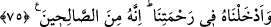

75. Onu (Lût’u) rahmetimize kabul ettik; çünkü o, sâlihlerden idi.
“Onu (Lût’u) rahmetimize kabul ettik;” husûsi rahmetimize nâil olanlar arasına
soktuk. “Çünkü o,” ezelde bizden kendilerine güzellik takdir edilmiş “sâlihlerdendi.”
et-Te’vîlâtü’n-Necmiyye’de şöyle der: “Burada rahmetin husûsî ve umûmî olmak
üzere iki çeşit olduğuna işâret etmektedir. Umûmî rahmet, iyi ve kötü herkese ulaşır.
Nitekim Allah Teâlâ: “Rahmetim her şeyi kaplamıştır.” (el-A‘râf 7/156) buyurmuştur.
Husûsî rahmet ise ancak havâs/seçkin kullar içindir. Bu ise rahmetin içine dâhil
olmaktır. Bu da irâdeye ve güzel istîdâd sâhibi olmaya bağlıdır. Bu sebeple Allah:
“Çünkü o sâlihlerden idi.” Yâni rahmetimizin feyzini kabûle ve ona dâhil olmaya
istîdadlı kimselerdendi. Bu ise “(O), dilediğini rahmetine sokar.” (el-İnsan, 76/31)
âyetinde olduğu gibi vuslat makamına işârettir. İyi anla!
[187]. Ebû Dâvud, Cihad, 3; Müsned, II, 84, 199, 209
[188]. İbn Mâce, İkame, 196; Müsned, VI, 463
[189]. Sehâvî, Mekasıd, s. 257
[190]. Buhârî, Cihad, 70; Rikak, 10; İbn Mâce, Zühd, 8
[191]. Buhârî, Vüdû, 9, Deavât, 14; Müslim, Hayz, 122, 123; Ebû Dâvud, Tahâre, 3;
Tirmizî, Tahâre, 4; Nesaî, Tahâre, 17; İbn Mâce, Tahâre, 9